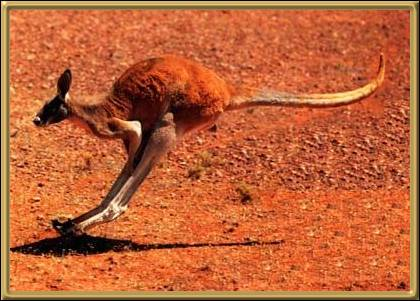

Definitely the most well-known of all Australian animals are the kangaroos. They use their tails for balance and as a fifth limb for stabilisation during slow movement. They can't walk backwards, they have a mostly vegetarian diet, and the female has the ability to be constantly pregnant. The name is derived from an aboriginal word that means "I don't understand you", which is what they told the first settlers when they were asked what the animal was! The most common varieties of Kangaroo are the Red kangaroo, of which the male is the largest, the Western Grey kangaroo, and the Eastern Grey. There are over 60 different varieties of kangaroo.
Photographer: Unknown